Creative Direction · Scenic Design · Live Events
Cristian Taraborrelli
Studio
Attualità
2027
The Enchanted Pig — Jonathan Dove
27 gennaio – 3 febbraio 2027 · Opéra de Lausanne · Co-produzione Grand Théâtre de Genève / Théâtre Am Stram Gram · Regia Joan Mompart · Scene Cristian Taraborrelli · dir. Anthony Fournier 27 January – 3 February 2027 · Opéra de Lausanne · Co-production Grand Théâtre de Genève / Théâtre Am Stram Gram · Direction Joan Mompart · Sets Cristian Taraborrelli · cond. Anthony Fournier 27 janvier – 3 février 2027 · Opéra de Lausanne · Coproduction Grand Théâtre de Genève / Théâtre Am Stram Gram · Mise en scène Joan Mompart · Scénographie Cristian Taraborrelli · dir. Anthony Fournier

Planetaria — Discorsi con la Terra
26–28 settembre 2025 · Teatro della Pergola, Firenze · Con Stefano Accorsi, Matilda De Angelis, Pilar Fogliati, Nicolas Maupas, Teresa Saponangelo 26–28 September 2025 · Teatro della Pergola, Florence · With Stefano Accorsi, Matilda De Angelis, Pilar Fogliati, Nicolas Maupas, Teresa Saponangelo 26–28 septembre 2025 · Teatro della Pergola, Florence · Avec Stefano Accorsi, Matilda De Angelis, Pilar Fogliati, Nicolas Maupas, Teresa Saponangelo

Italian Souvenir
Cerimonia di Apertura Olimpiadi Invernali 2026 · Cortina d’Ampezzo Opening Ceremony Winter Olympics 2026 · Cortina d’Ampezzo Cérémonie d’ouverture Jeux Olympiques d’hiver 2026 · Cortina d’Ampezzo
2026
XX Giochi del Mediterraneo
21 agosto – 3 settembre 2026 · Stadio Erasmo Iacovone, Taranto · Cerimonie di Apertura e Chiusura · Autore e Content Supervisor · Produzione Casta Diva 21 August – 3 September 2026 · Stadio Erasmo Iacovone, Taranto · Opening and Closing Ceremonies · Author and Content Supervisor · Production Casta Diva 21 août – 3 septembre 2026 · Stade Erasmo Iacovone, Tarente · Cérémonies d’ouverture et de clôture · Auteur et Content Supervisor · Production Casta Diva
Welcome
Tempo rimanente ai Giochi del Mediterraneo Taranto 2026 Time remaining to the Mediterranean Games Taranto 2026 Temps restant aux Jeux Méditerranéens Tarente 2026
Italian Souvenir
Planetaria

Amway China — Meraviglioso

Sangeet — Villa Gastel

Expo Roma 2030 in Paris

Expo Roma 2030

Iveco — Connecting Dots

Città dei Bambini e dei Ragazzi

Angelica Cunta

Pagliacci — AR Breaks into Opera

Fra(m)menti

On ne paie pas !

L'Opera de Quat'Sous

Italia in Miniatura

La Sonnambula Ancona

Le Mariage de Figaro

La Sonnambula

Nido

Il Colore del Sole

Macbeth

Il Regno di Natale

L'Opera Illumina il Natale

Moda e Modi

L'Acquario delle Nuove Meraviglie

Don Carlos

L'Elisir d'Amore

La Belle Hélène

La Jura

La Pietra del Paragone

Münchhausen?

I Due Foscari

Ventrosoleil

NCB Convention

Balance

Luisa Miller

Intercoiffure

Turandot

Variazioni sul Cielo
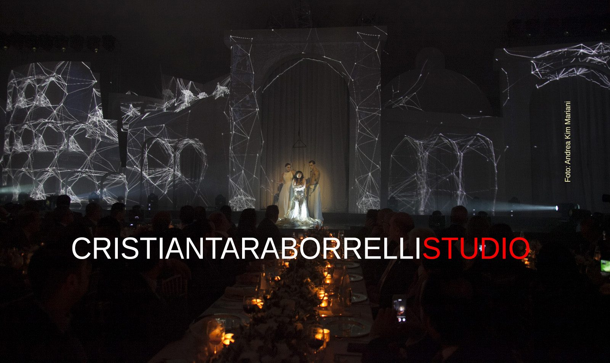
Avanti, Striding Forward

Marie Galante

Dom Juan

Medea
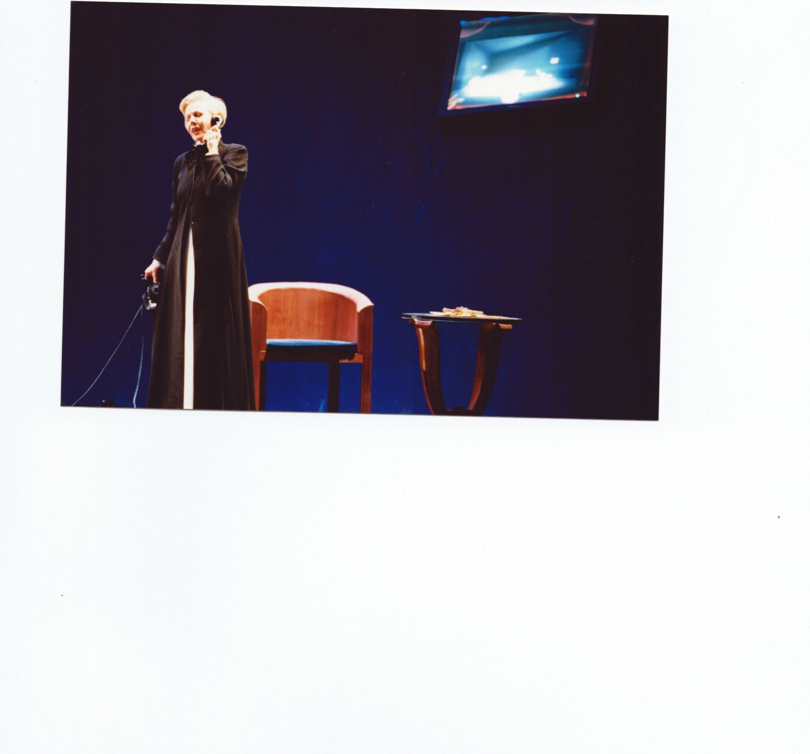
La Voix Humaine & Erwartung

Requiem per Edith Stein
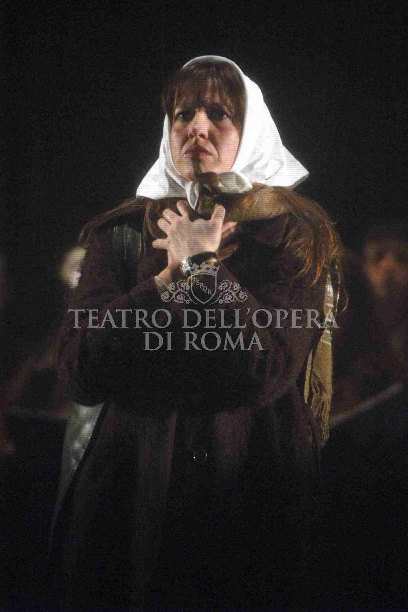
Estaba la madre
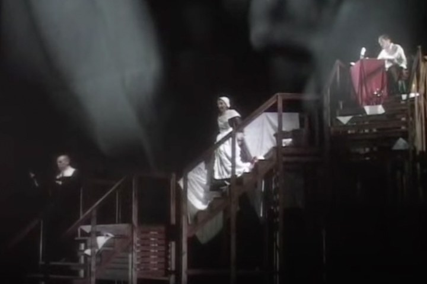
Gesualdo Considered as a Murderer
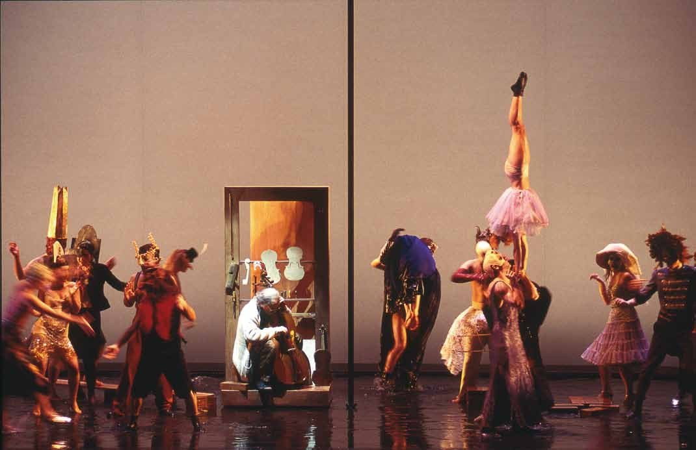
Le luthier de Venise
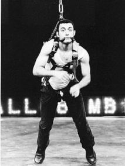
Woyzeck (Büchner)
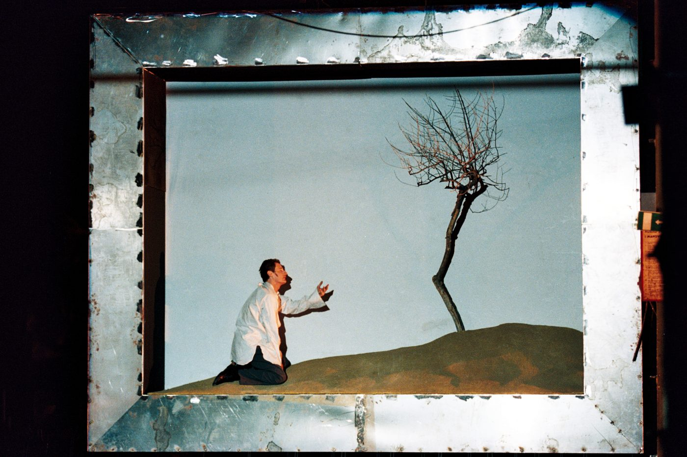
Graal (da Chrétien)
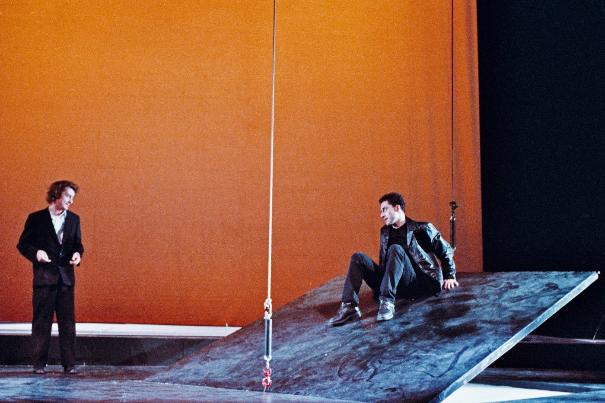
Notte
Trilogia das Barcas
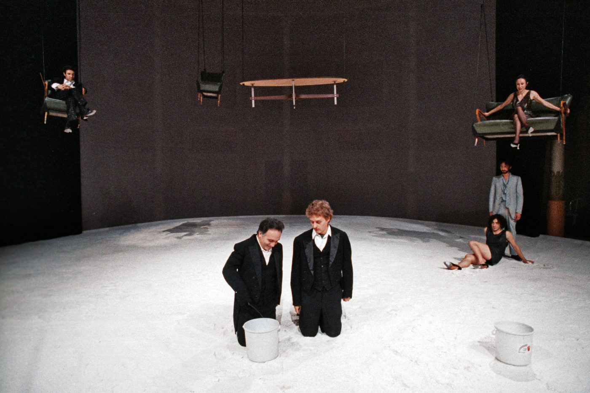
La nascita della tragedia
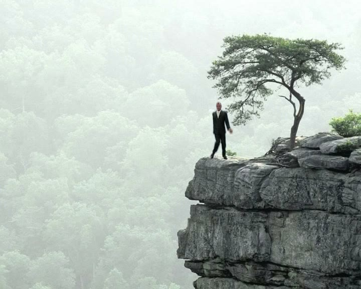
Commedia
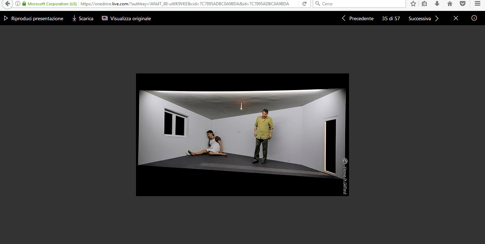
La Ronde du carré
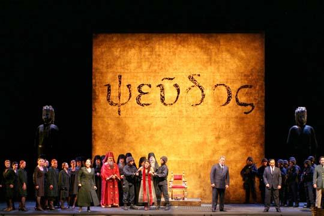
Zelmira
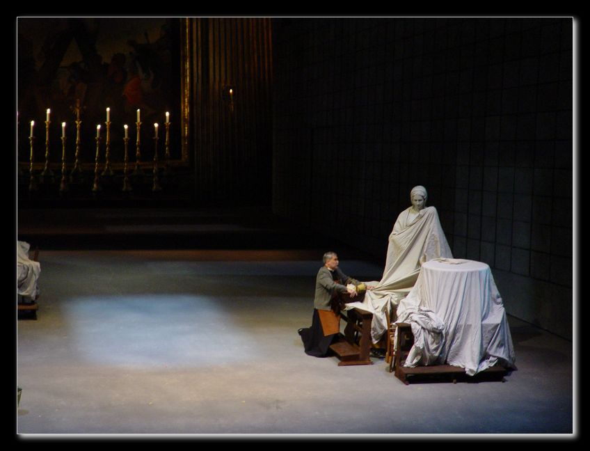
Tosca
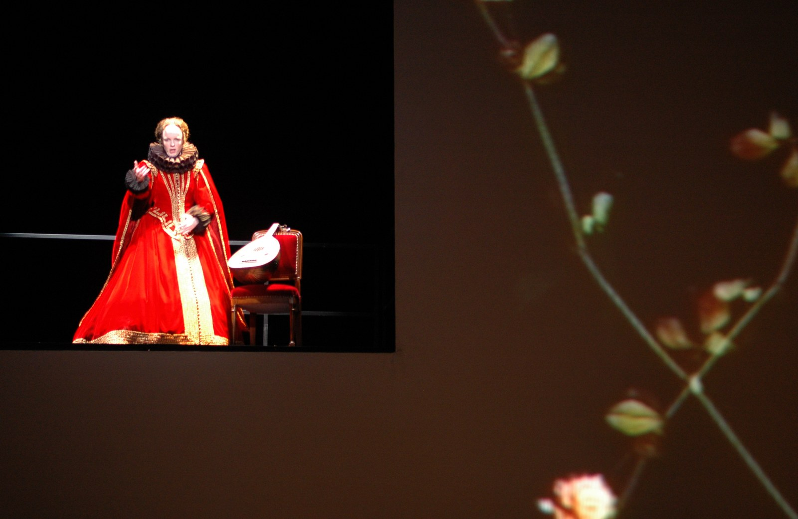
L'Orfeo
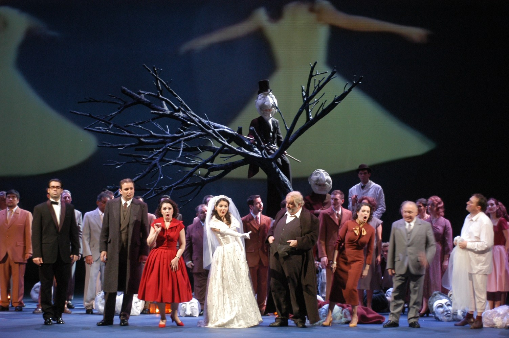
Falstaff
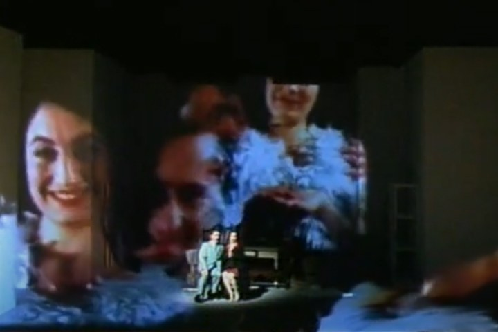
Il letto della storia
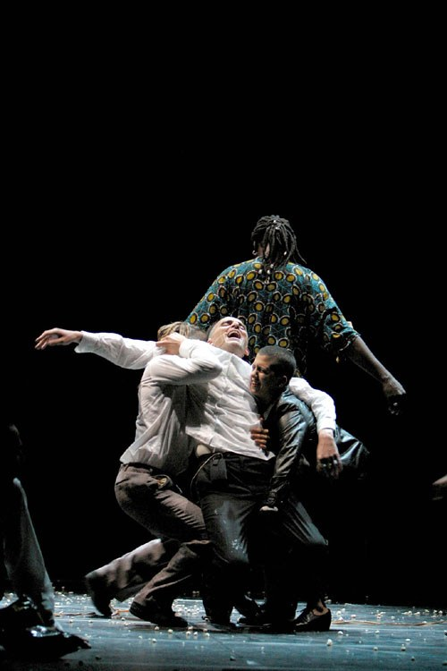
Iniziali BCGLF
Lalla-Rûkh
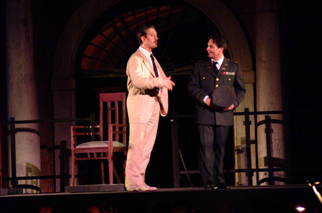
Julie / Milton

Gertrude (Le Cri)
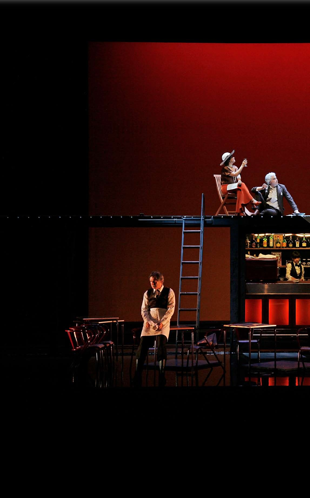
La Bottega del Caffè

Maria di Rohan

Il Processo di Kafka
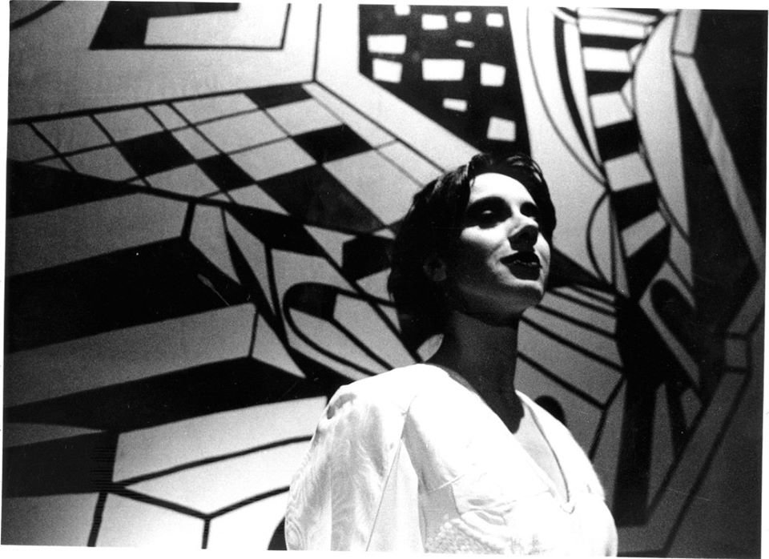
Biancaneve